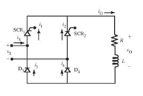
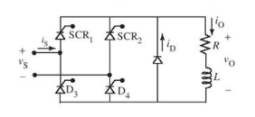
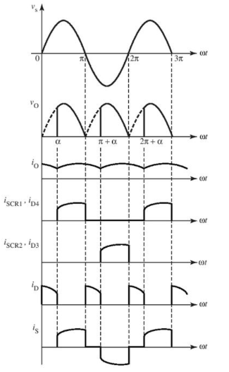

Retificador em Ponte - Um Quadrante
Aplicações que demandam fluxo de potência apenas da fonte AC para a carga DC são operadas apenas na forma de retificação. Isso é alcançado em retificadores em ponte quando se substituem metade dos SCRs por diodos, sendo esses circuitos denominados como retificadores em ponte de 'um-quadrante' ou 'semicontrolados'.
Um método alternativo para obter a operação de um quadrante em retificadores em ponte é conectar um diodo de retorno nos terminais de saída do retificador. Seu funcionamento é semelhante ao retificador controlado de ponte, onde, se SCR1 e D4 estão diretamente polarizados positivamente, o SCR2 e D3 estarão desligados; ao inverter a polarização, SCR2 e D3 passam a conduzir.
Com uma carga indutiva, ocorre uma comutação a cada semiciclo para fazer com que a corrente da carga conduza pelo diodo. A corrente passa por SCR1 e D3 na metade do ciclo e depois por SCR2 e D4, finalizando o ciclo.
Isso resulta na parte negativa da tensão de saída ficando desligada, produzindo uma forma de onda de tensão de saída idêntica à da carga, comportando-se como se fosse resistiva pura.
Se o circuito da imagem acima tiver uma carga altamente indutiva, a corrente na carga fluirá durante todo o semiciclo negativo, podendo perder o controle. Quando um diodo de retorno é utilizado, o FWD (diodo de avanço) fica diretamente polarizado, conduzindo à medida que a tensão de carga se inverte, permitindo que a corrente passe pelo FWD.
 O FWD manterá as operações limitadas a zero quando a tensão for negativa no Sistema.